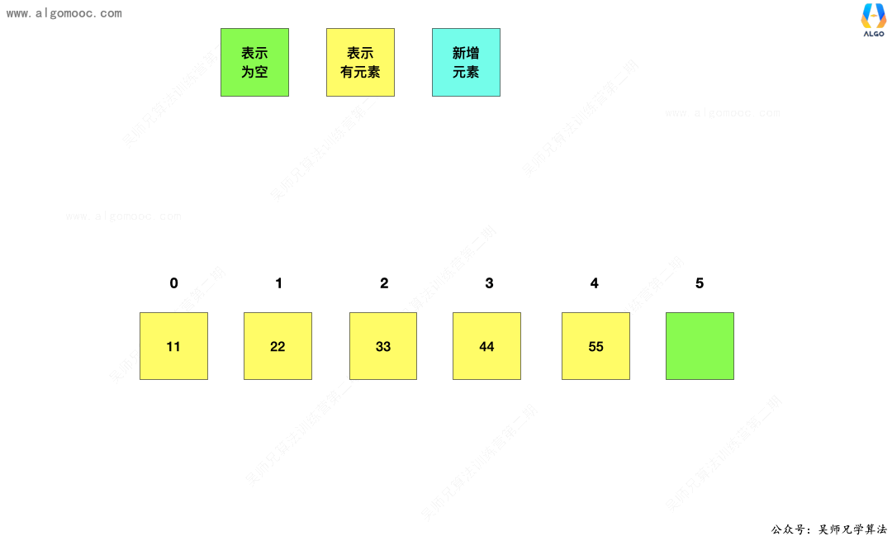
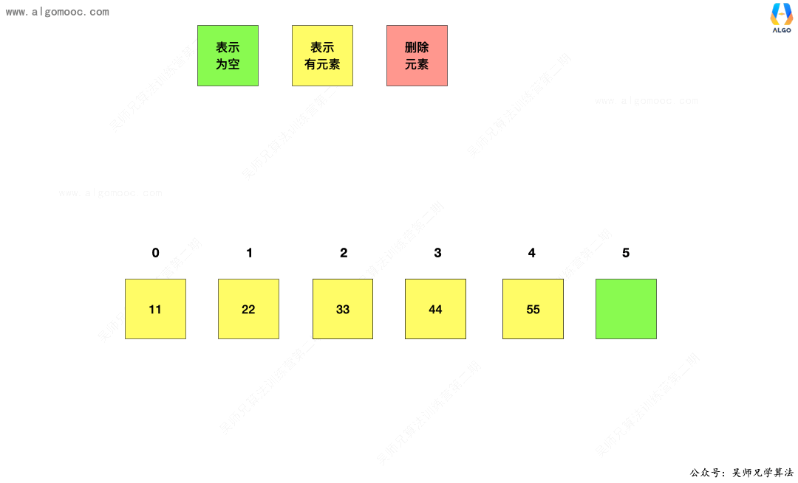
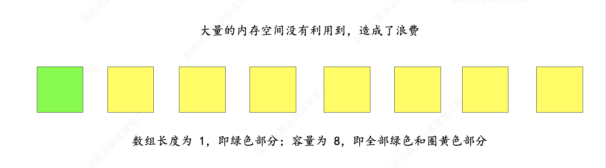

算法基础知识¶
一、时间复杂度¶
1.1 常数阶 O(1)¶
无论代码执行了多少行，只要是没有循环等复杂结构，那这个代码的时间复杂度就都是O(1)，如：
上述代码在执行的时候，它消耗的时候并不随着某个变量的增长而增长，那么无论这类代码有多长，即使有几万几十万行，都可以用 O(1) 来表示它的时间复杂度。
1.2 对数阶O(logn)¶
在 while 循环里面，每次都将 i 乘以 2，计算完之后，i 距离 n 就越来越近。
假设循环 x 次之后，i 就大于 n ，此时这个循环就退出，也就是说 2 的 x 次方等于 n，那么 x = log2n。
也就是说当循环 log2n 次以后，这个代码就结束，因此这个代码的时间复杂度为：O(logn)
1.3 线性阶 O(n)¶
这段代码，for 循环里面的代码会执行 n 遍，因此它消耗的时间是随着 n 的变化而变化的，因此这类代码都可以用 O(n) 来表示它的时间复杂度。1.4 线性对数阶O(nlogn)¶
将时间复杂度为 O(logn)的代码循环 n 遍的话，那么它的时间复杂度就是 n * O(logn)，也就是O(nlogn)。
1.5 平方阶 O(n²)¶
平方阶O(n2) 就更容易理解了，如果把 O(n) 的代码再嵌套循环一遍，它的时间复杂度就是 O(n²) 。
这段代码嵌套了 2 层 n 循环，它的时间复杂度是 O(n*n)，即 O(n²) 。
一般来说，我们接触的大部分时间复杂度就是以上这 5 种，其它的比如 立方阶 \(O(n³)\)、K次方阶 \(O(n^k)\) 等等出现的频率较少，同时分析情况也和上述其它几种情况一样。
二、空间复杂度¶
空间复杂度是衡量算法在运行过程中临时占用存储空间大小的指标，通常用大O符号表示。它关注的是算法使用的额外空间（即除输入数据外），随输入规模增长的变化趋势。
2.1 关键点：¶
- 常见空间复杂度：
- O(1)：常数空间，使用固定数量的变量（如循环中的临时变量）。
- O(n)：线性空间，如分配长度为n的数组。
- O(n²)：平方空间，如n×n的二维矩阵。
-
O(log n)：对数空间，常见于递归深度为对数的情况（如平衡树的遍历）。
-
递归算法的空间复杂度：
- 由递归深度和每层递归的额外空间共同决定。
-
例如，普通递归斐波那契数列的空间复杂度为O(n)（深度为n），而尾递归优化后可降至O(1)。
-
动态规划与优化：
-
通过状态压缩（如仅保存必要的前驱状态）可将空间复杂度从O(n)优化至O(1)。
-
原地操作：
- 如快速排序和反转数组的迭代实现，空间复杂度为O(1)，无需额外存储。
2.2 示例分析：¶
- 归并排序：需额外O(n)空间合并子数组。
- 广度优先搜索（BFS）：队列最大存储O(n)节点。
- 递归创建数组：若每次递归分配递减数组（如n, n-1, …），总空间复杂度为O(n²)。
2.3 计算步骤：¶
- 识别变量与数据结构：确定算法中动态分配的结构（如数组、队列）。
- 分析递归深度：递归算法的栈空间与深度成正比。
- 合并空间需求：取最高阶项，忽略低阶和常数。
2.4 总结：¶
空间复杂度分析需结合算法实现细节，重点关注额外空间的使用趋势。优化方法包括减少数据结构大小、改用迭代替代递归或优化递归为尾递归。
三、什么是数据结构¶
数据结构研究的是数据如何在计算机中进行组织和存储，使得我们可以 「高效」 的获取数据或者修改数据。
这里，我们需要特别注意高效这个词，它暗示我们获取数据或者修改数据有很多种方式，但我们可以根据使用场景来选择最合适的数据结构，达到高效的目的。
一般来说，我们会接触三种数据结构：线性结构、树形结构、图形结构。
四、线性结构¶
线性表是具有 n 个相同类型元素的有限序列（ n ≥ 0 ）。
常见的线性表有：
- 数组
- 链表
- 栈
- 队列
- 哈希表（也叫做散列表）
五、数组¶
数组是一种顺序存储的线性表，所有元素的内存地址是连续的，对于一维数组来说，把第一个数据元素存储到下标为 0 的位置中，把第 2 个数据元素存储到下标为 1 的位置中，以此类推。
基于这样的存储方式，数组具备一个很大的优点：快速查询，通过索引可以快速获取到需要查询的数据。
数组有个缺点： 无法动态修改容量。
六、链表¶
6.1 简介¶
在数组的学习中，我们发现，想要在动态数组中执行 插入 和 删除 操作需要移动大量的元素。


于此同时，动态数组可能会造成内存空间的大量浪费。

那么，可不可以在不移动大量元素的基础上实现 插入 和 删除 操作呢？同时能不能用到多少数据就申请多少内存呢？
答案是可以的，那就是链表。
6.2 链表详解¶
链表是一种链式存储的线性表，所有元素的内存地址不一定是连续的，因为只有在每次新增数据的时候才会去申请内存地址，它是真正的动态数据结构。

链表 是由一个个 节点 组成，每个 节点 之间通过 链接关系 串联起来，每个 节点 都有一个 后继节点，最后一个 节点 的 后继节点 为 空节点。如下图所示：

基于这样的特性，链表具备以下两个显著的特点：
1、优点，真正的动态，不需要处理固定容量的问题
2、缺点，丧失了随机访问的能力，无法像数组那样，给定一个索引，立马获取到元素
6.3 设计单链表¶
和设计动态数组一样的思路，我们设计一下单链表，定义为 LinkedList，它具备以下的功能：
- 1、获取链表中的元素个数
- 2、判断链表是否为空
- 3、在链表头添加元素
- 4、在链表中间添加元素
- 5、在链表尾部添加元素
- 6、设立虚拟头节点
- 7、获取链表的第 index 个位置的元素
- 8、修改链表的第 index 个位置的元素
- 9、查找链表中是否有该元素
- 10、删除链表的第 index 个位置的元素
- 11、清空所有元素
基于数组的学习基础，链表的设计过程中我们直接使用泛型。
0、节点¶
对于每个节点来说，它具备三个属性：
- 1、当前节点存储的值，也叫做数据域
- 2、当前节点存储的指向下一个节点的地址，也就是指向后继节点的地址，也叫做指针域
- 3、当前节点的地址
=== "Python"
``` c
#include <stdio.h>
int main(void) {
printf("Hello world!\n");
return 0;
}
```
=== "C++"
```c++
private class Node{
// 1、当前节点存储的值
public E e;
// 2、当前节点存储的执行下一个节点的地址
public Node next;
public Node(E e, Node next){
this.e = e;
this.next = next;
}
public Node(E e){
this(e, null);
}
public Node(){
this(null, null);
}
}
```